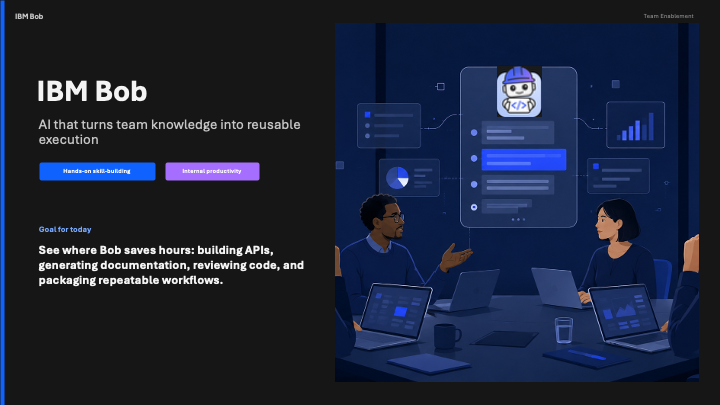
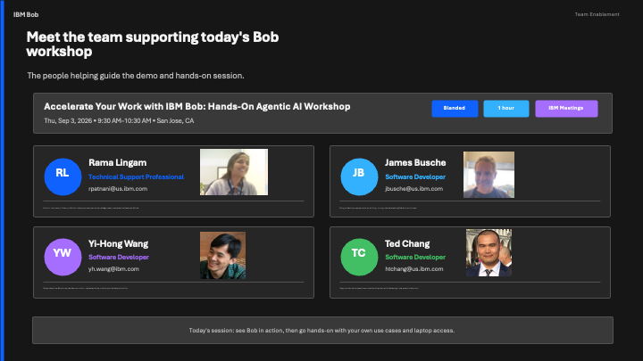
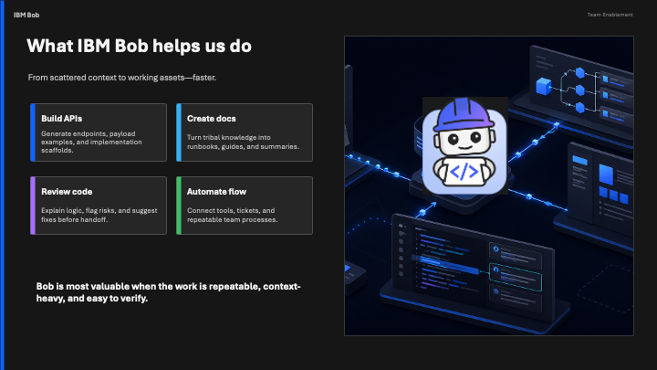
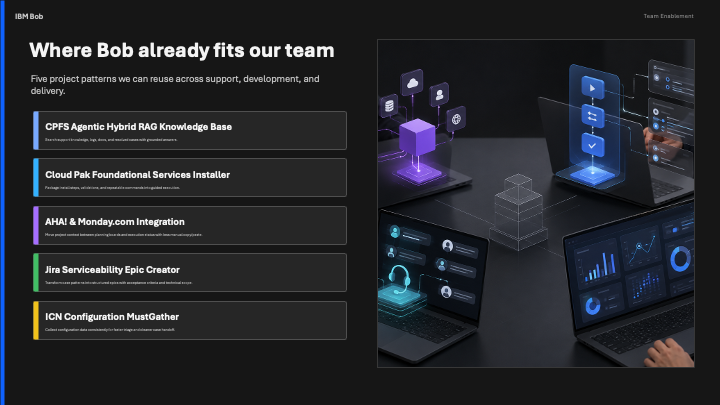
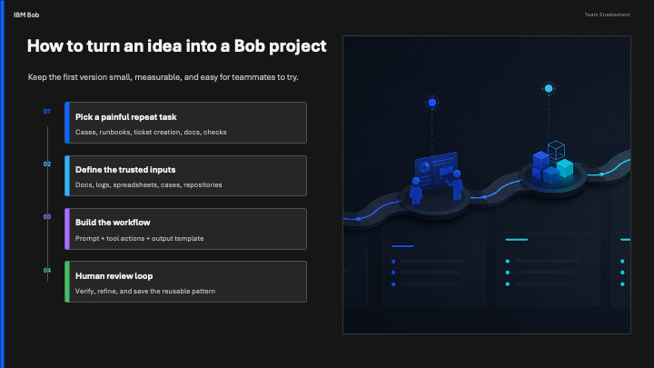
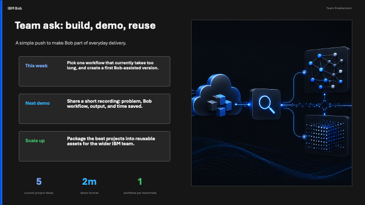

IBM Bob Workshop: Power User Techniques¶
Advanced Tips, Tools, and Team Workflows¶
Workshop Overview¶
This hands-on workshop is designed for IBM employees who have already met Bob and want to go deeper. You'll learn the techniques that separate a power user from a casual one: rules, skills, MCP integrations, and Bob Shell. Then you'll apply them in a series of timed exercises you can take directly back to your team.
Duration: 55–60 minutes
Target Audience: IBM employees who have used Bob before and want to maximize its value for their team
Prerequisites: Bob IDE installed, basic familiarity with Bob chat (Lab 3 or equivalent)
Materials Needed: Laptop with Bob access, VS Code with Bob extension, terminal access






Workshop Agenda¶
| Segment | Time |
|---|---|
| Part 1: Tips and Techniques: Maximizing Bob | 10 minutes |
| Exercise 1: Build an Interactive Dashboard | 10 minutes |
| Exercise 2: Analyze a GitHub Repository | 10 minutes |
| Exercise 3: Create Your Own Skill | 10 minutes |
| Part 2: Build Your Own Workshop | 15–20 minutes |
| Total | 55–60 minutes |
Part 1: Tips and Techniques: Maximizing Bob (10 minutes)¶
This section covers the configuration and workflow patterns that make Bob significantly more powerful. Each topic takes 1–2 minutes and sets up the exercises that follow.
Tip 1: Always Start a New Project in Its Own Folder¶
Every project should live in its own dedicated folder. Bob uses the folder as its workspace boundary — it reads project rules, loads MCP servers, and scopes all file operations to that folder.
Create a folder and open it in VS Code:
mkdir my-project && cd my-project && code .
Grant trust so Bob has full access:
When you open a new folder, Bob will prompt you to trust it. You have three options:
- Trust folder: grants full access to this folder only
- Trust parent folder: automatically trusts all subdirectories — useful if you keep all your projects under one directory like
~/projects/ - Don't trust: Bob runs in restricted safe mode (no project rules, no MCP servers, no auto-approval)
Without trust, Bob operates with significant restrictions — project rules are ignored, MCP servers won't connect, and tool auto-approval is disabled. Always trust folders containing your own code.
Trust decisions are saved
Your choice is stored in ~/.bob/trustedFolders.json so you are only asked once per folder.
Tip 2: Global and Project Rules¶
Bob reads rules before every conversation, letting you set context once rather than repeating it in every prompt. Rules use a directory-based approach — place any number of .md files inside the rules directory and Bob loads them all.
Global rules apply to every Bob conversation on your machine:
- Location:
~/.bob/rules/(directory of.mdfiles) - Use for: personal preferences, coding style, output format, tone, language
Project rules apply only when Bob is open in a specific workspace:
- Location:
.bob/rules/at the root of your project - Use for: tech stack, architecture decisions, team conventions, DO NOT CHANGE sections
Example project rules setup:
mkdir -p .bob/rules
# .bob/rules/stack.md
## Stack
- Backend: Node.js 20 + Express
- Frontend: React 18 + TypeScript
- Database: PostgreSQL 15 (never use MongoDB)
## Conventions
- All API responses must use { data, error, meta } envelope
- Always add JSDoc to exported functions
- Tests go in __tests__/ next to the source file
## Do Not Change
- Do not modify /src/auth/ (compliance boundary)
- Do not update package-lock.json manually
Try it now: Create a .bob/rules/ directory in your project, add a .md file describing your stack or preferences, and Bob will pick it up automatically.
Rules compound: the more precise they are, the more consistent Bob's output
Project rules layer on top of global rules. Teams that share a .bob/rules/ directory in their repo get consistent Bob behavior across every developer's machine automatically.
Tip 3: How to Use and Create Skills¶
Skills are reusable instruction sets that Bob can activate on demand. They let you package deep expertise (a framework, a workflow, a coding pattern) into a single slash command.
Using a built-in skill:
/agent-with-bob-shell build a report comparison agent for our weekly standups
Why skills matter:
- Encode your team's best practices once, reuse across every project
- Share via your repo's
.bob/skills/directory so everyone on the team gets the same behavior - Build domain-specific skills for your client, technology, or workflow
Creating a skill (three files, one folder):
.bob/skills/my-skill/
├── SKILL.md ← The skill instructions Bob reads
└── EXAMPLES.md ← (Optional) examples to guide Bob's output
Minimal SKILL.md structure:
---
name: my-skill
description: What this skill does and when to activate it
---
# My Skill
## When to use
...
## Instructions
...
Ask Bob to help you create a skill:
Help me create a Bob skill called "ibm-review-checklist" that reminds
Bob to check for IBM coding standards, security patterns, and
documentation requirements whenever it reviews or creates code.
New task / New context
Before activating a skill, click New Task to start a fresh context window. Skills work best when Bob's context isn't cluttered with a prior conversation. A small context is also a faster context, so Bob can focus on what you actually need.
Tip 4: How to Use and Create MCP Servers¶
MCP (Model Context Protocol) connects Bob to external tools and data sources (databases, APIs, file systems, internal services) through a standardized interface.
Built-in MCP servers Bob supports:
| Server | What it gives Bob |
|---|---|
filesystem |
Read/write access to directories you specify |
github |
Search repos, read issues, open PRs |
brave-search |
Live web search results |
postgres |
Query a PostgreSQL database directly |
slack |
Read channels, post messages |
Enable an MCP server via Bob Settings → MCP Servers, or by editing .bob/mcp.json:
{
"servers": {
"github": {
"command": "npx",
"args": ["-y", "@modelcontextprotocol/server-github"],
"env": { "GITHUB_TOKEN": "${GITHUB_TOKEN}" }
}
}
}
Creating a custom MCP server is useful when you have an internal API, a proprietary data source, or a workflow tool that Bob should be able to call:
Ask Bob: "Help me create a custom MCP server that exposes our
internal Jira instance so Bob can read tickets and update status."
MCP is how Bob becomes a team tool, not just a personal one
When your team runs a shared MCP server pointing at your project's database, issue tracker, or documentation, every developer's Bob instance can query the same live data. That turns Bob from a personal code assistant into a project-aware team tool.
Tip 5: Intro to Bob Shell¶
Bob Shell (bob) is the command-line version of Bob. It lets you call Bob from scripts, automation pipelines, and other programs without the IDE.
Authentication: SSO vs API key
Bob Shell supports two ways to authenticate:
| SSO / IBMid | API Key | |
|---|---|---|
| How | Browser login (same as bob.ibm.com) | BOBSHELL_API_KEY environment variable |
| Best for | Regular interactive use on your own machine | Automation, CI/CD, scripts, cron jobs |
| Setup | Run bob and a browser window opens automatically |
Generate a key and export it in your shell profile |
| Prompt | Once per session (or when your session expires) | Never — fully non-interactive |
For most users just getting started, SSO is the default — install Bob Shell, run bob, log in once in the browser, and you're done. Only set up an API key if you need Bob Shell to run unattended without a browser.
Install:
curl -fsSL https://bob.ibm.com/download/bobshell.sh | bash
Set-ExecutionPolicy Bypass -Scope Process; irm -Uri "https://bob.ibm.com/download/bobshell.ps1" | iex
Set your API key (so it persists across sessions):
- Go to bob.ibm.com and log in
- Open your subscription instance and navigate to the API key management section
- Create a new API key, set the type to Inference, and copy the value — you will not be able to view it again after creation
-
Add it to your shell profile so it is set automatically on every login:
# Add to ~/.zshrc or ~/.bashrc echo 'export BOBSHELL_API_KEY="your-api-key-here"' >> ~/.zshrc source ~/.zshrc# Set permanently for your user account [System.Environment]::SetEnvironmentVariable('BOBSHELL_API_KEY', 'your-api-key-here', 'User') -
Once
BOBSHELL_API_KEYis set, Bob Shell picks it up automatically — no extra flag needed:bob -p "Hello"
Never commit your API key to version control
Store it only in your shell profile or a secrets manager, never in a file that gets pushed to a repo.
Common Bob Shell commands:
# Ask Bob a question from the terminal
bob -p "Summarize the changes in the last 5 git commits"
# Use a specific mode (ask = no file edits, safe for analysis)
bob -p "What are the top 3 risks in this codebase?" -m ask
# Pass a file as context using @ mention
bob -p "Generate a one-paragraph summary of @README.md"
# Ask Bob to output structured JSON
bob -p "List the public API endpoints in src/ and return the result as JSON"
Where Bob Shell shines:
- CI/CD pipelines: automated code review on every pull request
- Pre-commit hooks: enforce standards before code is committed
- Report generation: scheduled summaries of project health
- Agentic applications: embed Bob as the reasoning engine in your own Python or Node.js app (see Lab 6c)
Quick Bob Shell demo:
bob -p "Look at the files in this directory and tell me what this project does in 2 sentences."
Tip 6: Misc Power Tips¶
Start with a New Task for every distinct job. Bob's context window is finite. A fresh task means Bob focuses on exactly what you need now, and it's faster.
Be the product owner, not the implementer. Describe what you want and the criteria for success, not the implementation steps. Bob handles the implementation; your job is to specify clearly.
Ask for a plan before execution on big tasks:
Before you start, describe your plan for restructuring this service.
Don't make any changes yet. I want to review the approach first.
Iterate with follow-ups rather than re-prompting:
Good. Now add input validation to the POST endpoint.
Use Bob to review Bob's own output:
You just generated that API. Now review it as a senior engineer
and identify any security or edge-case issues.
Ask Bob to explain its reasoning:
Explain why you chose that architecture. What alternatives did you consider?
Exercise 1: Build an Interactive Dashboard (10 minutes)¶
This exercise mirrors the warm-up from Lab 6: Bob goes from a plain-language description to a working, interactive file in a single prompt.
Start a New Task before this exercise
Click New Task in Bob to start fresh. This keeps context small and focused.
The Prompt¶
Type this into Bob:
Create a self-contained interactive HTML dashboard that:
- Shows 6 made-up IBM employees with their name, department, performance score (1–10),
and a current project name
- Displays the data as a sortable, searchable table
- Has a bar chart showing average scores by department
- Includes a summary card showing total headcount, average score, top performer,
and how many employees are on active projects
- Uses IBM's color palette (IBM Blue #0f62fe, white, light gray)
- No external libraries, fully self-contained
Save it as "ibm-team-dashboard.html"
Then tell me the file path so I can open it in my browser.
What to observe:
- Bob creates a complete, working HTML file in a single pass
- No setup, no server, no install. Opens directly in a browser.
- Bob narrates every decision it makes
Open the file in your browser. If you're doing this as a group, project it so everyone can see it.
Iterate: Improve the Dashboard¶
Once the dashboard works, try at least one follow-up prompt. The goal is to see how Bob reads the file it already created and makes a targeted, working change without breaking anything else.
Pick one (or write your own):
Add a filter dropdown so I can show only one department at a time.
Color-code the performance score column: green for 8–10, yellow for 5–7, red for below 5.
Add a slider that hides employees with a score below the threshold I set.
Add a dark mode toggle button in the top-right corner.
Discussion (2 minutes):
- How long would this have taken to build manually?
- What would you use a dashboard like this for on your team?
- What one change would make it immediately useful in your actual work?
Exercise 2: Analyze a GitHub Repository (10 minutes)¶
Use Bob to analyze a public GitHub repository, the same way you might analyze a client's codebase, a vendor library, or your own team's project before a code review.
Start a New Task before this exercise
Click New Task to keep this context separate from the dashboard exercise.
Option A: Use the Workshop Repo¶
The simplest path is to analyze this workshop's own repo:
Clone https://github.com/ibm/intro-bob-workshop into a local folder
called `intro-bob-workshop` in the current directory using:
git clone https://github.com/ibm/intro-bob-workshop intro-bob-workshop
Then give me:
1. A high-level overview of what this project is and what it does
2. The technology stack (languages, frameworks, tools)
3. The overall structure: what's in each major directory
4. Three observations about what's done well
5. Three things you'd improve or flag for review
Format your response as a structured report I could share with my team.
Option B: Analyze Your Own Team's Repository¶
If you have access to a relevant repo (internal or public), use that instead:
Clone (or examine, if already local) [YOUR REPO URL or PATH].
Give me:
1. A high-level overview of the project's purpose and scope
2. The technology stack and key dependencies
3. The top 3 code quality observations, both good and bad
4. Any security patterns or anti-patterns you notice
5. What a new developer would need to know to contribute in their first week
Format as an onboarding brief.
Option C: Analyze a Public Open Source Project¶
Pick any public repository you're curious about. If you need an example, try the Qiskit quantum computing SDK: https://github.com/Qiskit/qiskit
Examine the public repository at [PUBLIC REPO URL].
Produce a technical due-diligence summary covering:
- Purpose and maturity level
- Technology choices and dependencies
- Code quality indicators (test coverage hints, documentation quality, error handling)
- Maintenance health (recent commits, open issues pattern)
- Whether you'd recommend adopting this library, and why
Keep it to one page.
Discussion (2 minutes):
- What did Bob find that surprised you?
- How could this kind of analysis fit into your team's code review or vendor evaluation process?
- What additional context (rules, project knowledge) would have made the analysis sharper?
Exercise 3: Create Your Own Skill (10 minutes)¶
Start a New Task before this exercise
Click New Task to give Bob a clean slate for this exercise.
In this exercise, you'll use Bob to help you build a reusable skill: a packaged instruction set that you or your team can activate with a single slash command.
The Task¶
Choose one of the three examples below, or bring your own idea. The goal is to leave with a skill file you could commit to your team's repo today.
Example 1: IBM Code Review Checklist¶
A structured checklist Bob follows whenever it reviews or generates code for IBM client projects. Security, documentation, error handling, and IBM conventions all in one slash command.
Help me create a Bob skill called "ibm-code-review" that gives Bob a structured
checklist to follow whenever it reviews or generates code for IBM client projects.
Store it at .bob/skills/ibm-code-review/SKILL.md
The skill should check for:
- Security: no hardcoded credentials, proper input validation, no SQL injection patterns
- Documentation: all public functions have JSDoc or docstrings
- Error handling: all async operations have error handling
- IBM conventions: responses use standard envelope format, logging uses structured JSON
- Tests: at least one test per new function
Include a EXAMPLES.md with two examples: one for reviewing existing code
and one for generating new code with the skill active.
Test it:
First, make sure the ibm-team-dashboard.html file from Exercise 1 is in your current workspace. Then run:
/ibm-code-review ibm-team-dashboard.html
Example 2: Client-Facing Technical Proposal Writer¶
A skill that gives Bob a standard structure and tone for IBM technical proposals, RFPs, and solution briefs. Every proposal follows the same sections and stays business-appropriate without having to re-explain the format each time.
Help me create a Bob skill called "ibm-proposal-writer" that structures and
writes IBM client-facing technical proposals and solution briefs.
Store it at .bob/skills/ibm-proposal-writer/SKILL.md
The skill should:
- Always produce these sections in order: Executive Summary, Business Challenge,
Proposed Solution, Architecture Overview, Why IBM, Next Steps
- Keep language business-appropriate: no internal IBM jargon or acronyms
without definition
- Tie every technical recommendation back to a stated client business outcome
- Use confident, active voice. Avoid hedging phrases like "might" or "could potentially"
- Keep the Executive Summary to 3 sentences maximum
Include a EXAMPLES.md with two examples: one for a cloud migration proposal
and one for an AI/data modernization engagement.
Test it:
/ibm-proposal-writer Write a one-page solution brief for a client who wants
to modernize their on-premise data warehouse to a cloud-native architecture.
Example 3: Commit Message and PR Description Generator¶
A skill that enforces your team's exact git commit conventions and PR description template, including properly signed commits using git commit -S -s for GPG signing and Developer Certificate of Origin sign-off.
Help me create a Bob skill called "git-commit-helper" that writes properly
formatted git commit messages and pull request descriptions for my team.
Store it at .bob/skills/git-commit-helper/SKILL.md
The skill should:
- Follow Conventional Commits format: <type>(<scope>): <short summary>
Types: feat, fix, docs, chore, refactor, test, ci
- Prefix commit messages with the Jira ticket if provided (e.g. PROJ-1234: feat: ...)
- Keep the subject line under 72 characters
- Always use signed commits. The final git command must use both -S (GPG sign)
and -s (DCO sign-off), for example:
git commit -S -s -m "feat(auth): add OAuth2 token refresh"
- For PR descriptions, always include these sections:
## What changed
## Why
## How to test
## Screenshots (if UI change)
- Never include "WIP" or "TODO" in a commit message without a Jira ticket reference
Include a EXAMPLES.md with two examples: one for a feature commit with a Jira
ticket and one for a documentation-only change.
Test it:
/git-commit-helper I just added input validation to the user registration
endpoint and fixed a bug where empty email addresses were accepted.
Jira ticket: AUTH-892
Bob should produce the formatted commit message and the full git commit -S -s -m "..." command ready to copy and run.
Test Your Skill¶
Once Bob creates the skill files, activate it with the slash command shown in your chosen example and verify the output matches your expectations.
Discussion (2 minutes):
- What skill would have the highest impact on your team's daily Bob usage?
- How would you distribute a skill to your whole team? (Hint: commit
.bob/skills/to your repo) - What's the difference between a rule and a skill? When would you use each?
Part 2: Build Your Own Workshop (15–20 minutes)¶
This is the open activity. You've seen Bob's power-user features. Now use Bob the way you actually need it to work for you and your team.
Start a New Task before Part 2
Click New Task to begin with a completely fresh context.
What to Build¶
This session is intentionally open. Choose the direction that creates the most value for your actual work.
Direction A: Build Something Useful Right Now¶
Use Bob to create a real deliverable you could use or share within the next week.
Examples:
- A working prototype of a feature your team has been putting off
- A CI/CD pipeline configuration for your project
- A full test suite for an existing module
- A technical document, RFC, or architecture decision record
- A client-facing proof-of-concept or demo
Approach:
- Open a new task
- Set the context (paste your project rules, describe the system)
- Make your request with clear success criteria
- Iterate at least twice based on what Bob produces
- Have Bob review its own output and suggest improvements
Direction B: Set Up Bob for Your Team¶
Use this session to configure Bob the right way for your team's workflow. Everything you create here can be committed and shared today.
Tasks to work through (pick 2–3):
- Create a
.bob/RULES.mdfor your project with your actual tech stack and conventions - Create a skill for your most common Bob use case
- Configure an MCP server for a tool your team uses (GitHub, Jira, Slack, PostgreSQL)
- Create a custom mode for a specific role on your team (code reviewer, documentation writer, security auditor)
Starting prompts:
Help me write a .bob/RULES.md for a project that uses [your stack].
Include conventions for [specific area], standards for [specific area],
and a DO NOT CHANGE section for [sensitive areas].
Help me create a custom Bob mode for a "Security Auditor" role that focuses
exclusively on identifying security vulnerabilities, never makes code changes,
and always formats findings as a structured risk table.
Direction C: Build a Team-Ready Workflow¶
Design and prototype a Bob-powered workflow your team could adopt, turning a manual, repetitive process into something Bob handles autonomously.
Examples:
- PR review automation: Bob reviews every PR against your team's standards and posts a structured review comment
- Weekly standup summarizer: Bob reads your team's Git log or Jira activity and generates a standup brief
- Documentation auto-generator: Bob reads source code and keeps your API docs in sync
- Onboarding accelerator: Bob reads a new developer's assigned ticket and generates a "how to get started" guide specific to that codebase area
Design questions to answer first:
| Question | Your answer |
|---|---|
| What's the repetitive task? | |
| What does Bob read as input? | |
| What does Bob produce as output? | |
| Who reviews or acts on the output? | |
| What would make the output trustworthy? |
Then ask Bob to build it:
I want to automate [describe the workflow].
Bob should read [inputs] and produce [outputs].
The workflow will be triggered by [trigger].
The audience for the output is [who].
Please build a working prototype I can run today.
Start with the most minimal version that demonstrates the core value.
Group Share-Out (5 minutes)¶
When time is called, be ready to share:
- What did you build or configure?
- What was the most useful thing Bob produced?
- What's one thing you'll use or share with your team this week?
- What would you build next if you had another hour?
Key Takeaways¶
Rules and Context Shape Everything¶
The single biggest improvement most Bob users can make is writing a good .bob/RULES.md. Rules eliminate the need to re-explain your stack, conventions, and constraints in every conversation, and they keep Bob consistent across your whole team.
Skills Are Shareable Expertise¶
A skill is a packaged workflow. When you encode a complex task (a review checklist, a proposal template, an agent loop) into a skill, you make it repeatable and shareable. The best skills on a team get used every day and improve over time.
MCP Turns Bob Into a System Tool¶
Out-of-the-box, Bob knows your local files. With MCP, Bob knows your database, your issue tracker, your CI system, and your internal APIs. The more context Bob has, the more valuable its output.
Bob Shell Is the Bridge to Automation¶
Once you've used Bob interactively to solve a problem, Bob Shell lets you put that same reasoning into a script, a pipeline, or an application. The gap between "I ask Bob to do this" and "Bob does this automatically" is smaller than you think.
Fresh Context Is Fast Context¶
New Task is one of the most underused features. A small, focused context produces faster, more accurate results than a long conversation where Bob has to sort through everything it knows. Start fresh, stay focused.
Best Practices for Power Users¶
Do's ✅¶
- Commit
.bob/to your repo. Rules, skills, and MCP config become team assets, not individual ones. - Use New Task between distinct jobs. Context clarity is a performance multiplier.
- Ask Bob to plan before it acts on large, multi-file changes. Review the plan first.
- Iterate with follow-ups rather than re-prompting. Bob remembers the current context.
- Have Bob review its own work. A self-critique pass often catches the most important issues.
- Test Bob's output. Run the code, open the file, verify the result before sharing.
Don'ts ❌¶
- Don't accumulate a massive context without starting a new task. Precision degrades as context grows.
- Don't skip review for anything going to clients or production. Bob produces drafts, not final decisions.
- Don't put sensitive data in prompts. Credentials, PII, and proprietary algorithms should never appear in a conversation.
- Don't over-specify implementation. Give Bob the goal and constraints, and let it choose the approach.
- Don't treat Bob's first output as final. The second and third iterations are usually where the real value appears.
Resources¶
| Resource | What it is |
|---|---|
| Bob Documentation | Official docs: rules, skills, MCP, Bob Shell |
| Bob Shell Getting Started | Install and authenticate Bob Shell |
| MCP Server Registry | Pre-built MCP servers for common tools |
| Lab 6c: Agentic App with Bob Shell | Deep dive into building agents with Bob Shell |
| Workshop GitHub Repo | All workshop materials including skills |
Lab 7: IBM Bob Power User Workshop Duration: 55–60 minutes Target: IBM employees with prior Bob experience Last Updated: 2026